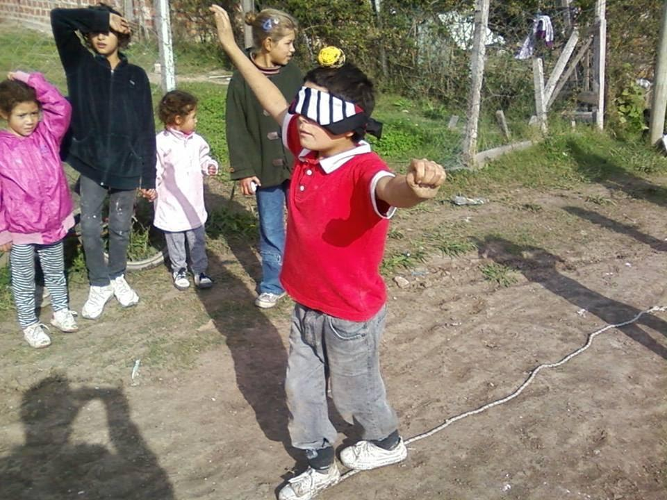
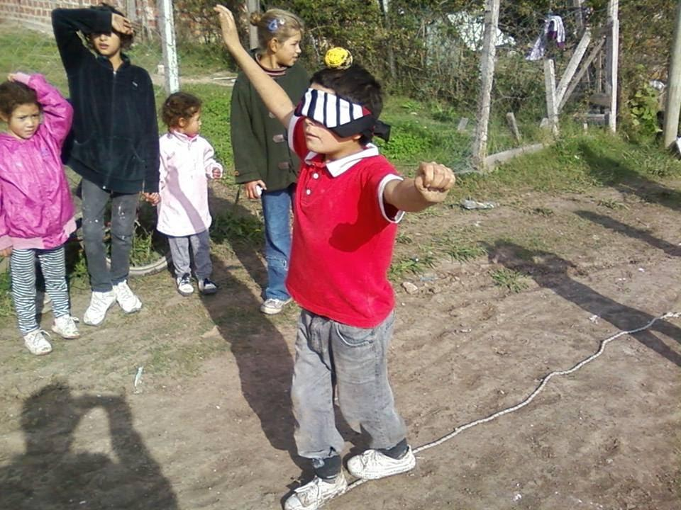

Como surgió el tema
Para dar un examen de alemán internacional yo tenía que elegir un tema y desarrollarlo oralmente. Yo no estaba para nada entusiasmada en darlo pero los profesores me propusieron que solo lo preparase y si me sentía confiada para darlo, lo diera. Así que pensando que era solo un trabajo para mí y no un examen elegí el tema: “trabajo social” que es el tema que normalmente me viene a la cabeza ya que desde que tengo memoria mi mayor deseo es poder ayudar a otros a salir adelante y dejar algo en el mundo, aunque sea muy chiquito. Pero como decía llegaba a la clase con hojas larguísimas de Wikipedia que eran muy poco interesantes y no llegaban a nada concreto. Hasta que un día mí profesora me dijo que me fije en un folleto en la cartelera, sobre una organización en Alemania que tenía programas de voluntariados para acompañar a niños con discapacidad, personas mayores, refugiados, y más. La organización se llamaba “Freunde der Erziehungskunst Rudolf Steiners” y me fascinó, porque podía ayudar y no despegarme de la pedagogía Waldorf que es algo que me apasiona también. Ese día llegué a mi casa y busqué en internet todo lo que había: Imprimí los folletos en alemán y español, vi montones de videos, fotos, leí acerca de cómo participar de un año de voluntariado, etc. Empecé a hacer el examen con mucho más entusiasmo y mientras investigaba descubrí algo que me gustaba todavía más, que era “La pedagogía de emergencia” una ayuda para niños y jóvenes que viven en situaciones de crisis, con métodos de pedagogía Waldorf. En ese momento dije: “este va a hacer mi tema de trabajo final”. Con este trabajo lo que quiero es informarme más sobre el tema que llamó tanto mi atención y ver si es el camino que quiero tomar en el futuro.
Introdución “La pedagogía que ayuda al niño a superar el trauma”
La Pedagogía de Emergencia fue creada por un maestro Waldorf, Bernd Ruf, para dar respuesta y apoyo a los niños después de catástrofes naturales, bélicas, etc. Él observó que, en general, había ayuda y cuidados físicos y alimenticios por parte de diversas ONG, sin embargo detectó que si no se trataban rápidamente otros aspectos, los niños se quedaban con secuelas emocionales graves generadas por el trauma
La Pedagogía de Emergencia mediante los métodos de la Pedagogía Waldorf realiza intervenciones en regiones de crisis, ya sea en lugares donde ocurrieron guerras, catástrofes naturales o ataques terroristas como donde hay hambruna o extrema pobreza. Se vio que los recursos artísticos básicos de la Pedagogía Waldorf como son contar cuentos, cantar, hacer rimas, pintar, dibujar libremente y jugar, tienen un profundo impacto reparador si se hacen en el transcurso de los dos primeros meses pasado el trauma. Sin embargo para que estos “simples recursos” surtan efecto sanador, deben ser hechos a conciencia y por personas preparadas.
Además de la intervención directa con niños y jóvenes, ofrecen orientación a padres para que estos puedan acompañar a sus hijos de una manera constructiva, ya que si un niño comienza a sanar junto a los pedagogos pero al regresar a casa, su familia no sabe cómo tratarlo se dificulta el proceso de sanación. También los maestros reciben una capacitación para que comprendan desde esta mirada el comportamiento del niño y dispongan de los métodos para ayudarlo correctamente.
Desde su fundación en 2006 la Pedagogía de Emergencia ya ha llevado a cabo 40 intervenciones en regiones de crisis: En el Líbano, China, Gaza, Indonesia, Haití, Japón, Kenia, Kurdistán-Irak, Filipinas, Bosnia y Nepal. También en Argentina, Chile, Brasil, Colombia, Kenia y Filipinas se crearon grupos para hacer intervenciones más duraderas, de hasta un año entero.
Nace una idea
En el año 2006 en Alemania ocurrió el mundial de fútbol y cada ciudad organizó programas para mostrarse. Stuttgart siendo la sede de la pedagogía Waldorf quiso, entre otras cosas, mostrar esta pedagogía. La ciudad puso fondos para invitar a jóvenes de todo el mundo a reunirse en un “Festival por la paz”. Entre ellos había un grupo de Israel y uno del Líbano, este último era un grupo de chicos discapacitados. Mientras ocurría este evento internacional de paz se desató la guerra entre ambos países y los alumnos no tuvieron forma de regresar a sus hogares. Fue así que los organizadores del evento, “Freunde der Erziehungskunst”, les consiguieron buenos alojamientos, alimento, contención, programas etc. Pero los jóvenes empezaron a desarrollar síntomas cada vez más fuertes y sus familias exigían el regreso del grupo. Según la cultura libanesa, la familia debe estar unida en momentos de crisis más que nunca aunque sea para morir juntos. La situación se estaba volviendo cada vez más inestable y entonces Bernd Ruf, responsable de “Freunde der Erziehungskunst” decidió ceder ante las presiones y regresar al grupo de jóvenes. Los acompañó y luego de pasar por muchas complicaciones los pudo entregar a sus respectivas familias. Pero allí se encontró con algo que nunca había experimentado: la guerra. Lo que más le llamo la atención fue el estado de los chicos: traumatizados, perturbados, pálidos, con una mirada dura y vacía. Él sabía lo fácil que era ayudar a estos niños en una etapa inicial del trauma y lo difícil que sería si llegaban a una fase posterior, cuando ya los síntomas del trauma y las relaciones se manifestaran en forma crónica.
Siendo un maestro waldorf con mucha experiencia pensó: si la Pedagogía Waldorf no puede hacer algo por estos chicos, entonces ¿para qué está? Se volvió a Stuttgart, juntó a un equipo de voluntarios y los llevó a trabajar en campos de refugiados con métodos de la Pedagogía Waldorf. Así surgió la Pedagogía de Emergencia y en los 10 años que pasaron ya hicieron más de 40 intervenciones en 25 países.
En que se basa la Pedagogía de Emergencia:
-Psicología del trauma
-Pedagogía waldorf
-Pedagogía trauma
-Psicología del trauma
El término "trauma" viene del griego y significa "herida". El trauma no es una enfermedad, sino una herida emocional, que al igual que una herida física, debe tratarse lo antes posible para evitar infecciones. Según la Organización Mundial de la Salud (OMS) un trauma ocurre cuando la persona ha estado expuesta a un situación amenazadora, estresante, o catastrófica que podría causar un profundo malestar.
El trauma es una experiencia que no puede ser almacenada como un recuerdo en el pasado, si no que permanece presente, provocando siempre una reacción emocional intensa, recuerdos vívidos, pesadillas y flashback donde uno revive el trauma como si fuese hoy. Lleva a tanto dolor y padecimiento que la persona no lo puede digerir.
Frente a una situación traumática se ponen en marcha mecanismos automáticos de defensa como la huida, la lucha y la parálisis. En caso de que huida y defensa no sean posibles el organismo se queda paralizado y casi todos los sistemas rítmicos de la persona son dañados severamente. Esto mantiene a la víctima en el pasado e impide su desarrollo. Por eso es tan importante disolver la parálisis, para evitar que se desarrollen patologías secundarias. La experiencia de los primeros instantes después de un trauma será determinante para su cura.
Según el tipo, la intensidad y la duración de la experiencia traumática puede causar en la víctima consecuencias más graves o más leves:
Tipos de trauma:
Monotrauma: un acontecimiento único como un accidente, un asalto, una operación, una catástrofe natural.
Trauma múltiple: Son varios traumas o traumas acumulativos que se repiten y que se pueden prolongar por muchos años
Trauma verbal: ocasionado por una agresión verbal como por ejemplo el bulliyng
Trauma interpersonal: Durante la niñez temprana, el más traumático es el que resulta de relaciones cercanas: experiencia de abandono o abuso puede tener una repercusión gravísima.
Generación del trauma:
“No sólo es importante lo que sucedió sino también como se experimentó”. (Senckel B.)
No todas las personas reaccionan igual ante un suceso negativo, pues para algunos ese suceso puede tornarse traumático y para otros no, por ende no es posible generalizar las causas que podrían desencadenar traumas psicológicos.
Pero si hay factores que influyen negativamente en la conformación de un trauma como la gravedad del hecho, el estrés, falta de apoyo social, etc. Y existen factores que reducen el riesgo de que este se desarrolle como: la relación cercana con, por lo menos, una persona que lo apoye, un ambiente afectivo o apoyo social. Es esencial que el niño vuelva a sentir que el mundo es bello, bueno y verdadero, porque cuando sucede una situación traumática toda la confianza en el mundo y en las personas se pierde.
-Fase aguda de shock
Surge en las primeras horas o días luego del acontecimiento traumático. En esta fase encontramos síntomas fisiológicos como sudor, escalofrío, temblor y taquicardia y síntomas emocionales como ataques de pánico, apatía o agresividad. Además los niños tienen una percepción irreal del tiempo y experimentan estados disociativos, como si hubieran salido de su cuerpo. Se los ve excitados y vergonzosos acompañado por repentinos cambios de ánimo.
-Reacción post-traumática
En la segunda fase del trauma, es decir, hasta dos meses después del shock, estamos a tiempo de parar el proceso negativo a través de recursos pedagógicos simples como cantar, hacer música, rimas y juegos de dedos, juegos de cooperación, coordinación y movimiento, juegos de tacto, dibujar, pintar, modelar, escuchar cuentos, sumados a rutinas y ritmos claros, en un entorno afectivo y seguro. Todo esto tiene un efecto reorganizador del cerebro y armonizador del plano mental, emocional y físico. Estas actividades y actitudes ayudan al niño a enraizarse en el cuerpo y volver a vivirlo como un sitio seguro, también lo ayudan a relajarse, aflojando la tensión y bloqueo y a recuperar el ritmo, todo ello es un requisito fundamental para superar el trauma. Estas actividades también ayudan a recuperar la confianza en sí mismos y en el otro, aspectos que también se pierden con el trauma. Están orientadas principalmente a producir autoconfianza, autocontrol, autoestima, relajación, apertura, alegría y bienestar.
-Trastorno post-traumático
Sin embargo, si no actuamos con rapidez, los síntomas, que son respuestas normales a sucesos anormales, se fijan, transformándose en una enfermedad, el “trastorno de estrés postraumático”. Es decir, síntomas permanentes de agresividad, hiperactividad, aislamiento, depresión o irritabilidad, combinados con problemas de aprendizaje. Los recursos de la fase anterior, siguen siendo enormemente útiles para esta fase, pero además de todo ello, los niños o jóvenes necesitarán apoyo terapéutico.
-Cambio de personalidad
De no tratarse, este trastorno podría derivar en el “trastorno permanente de la personalidad después de estrés postraumático”. Aquí se trata de una enfermedad que divide completamente al ser, que ya no será dueño de su vida, sino esclavo de sus impulsos. Ese es el momento en el que la víctima se convierte en agresor. Muchas veces la persona afectada se aísla socialmente y pierden su lugar de trabajo, su grupo de amigos se vuelven violentos, se transforman en delincuentes, adictos o suicidas.
Vista la evolución del trauma en estas cuatro fases, vemos que ayudando a los niños a superar el trauma, estaremos contribuyendo a cortar la cadena de dolor, en definitiva, contribuyendo a crear paz en el mundo.
- La Pedagogía Waldorf
La educación Waldorf proviene de las enseñanzas y de la investigación de Rudolf Steiner, quien a principios del siglo XX desarrolló una pedagogía que buscaba educar la globalidad del niño, facilitando el desarrollo de las capacidades y habilidades, que le son propias y respetando sus etapas evolutivas.
La primera escuela Waldorf fue fundada por él mismo en 1919 en Stuttgart (Alemania) para los hijos de los trabajadores de la fábrica de cigarrillos Waldorf-Astoria, de ahí el nombre del método. Desde su nacimiento hace 99 años las escuelas Waldorf se extendieron por todo el mundo.
En las escuelas Waldorf, los niños adquieren los conocimientos a través de la vivencia. Así, el aprendizaje se convierte en un proceso creativo y dinámico que les ayuda a desarrollar sentimientos de seguridad y fortaleza. Conquistar el conocimiento por medios propios les permite captar los contenidos de manera profunda y duradera. Las capacidades que se adquieren a través de este método forman una base sólida para futuros aprendizajes y para la vida adulta social y laboral.
Las etapas evolutivas de la humanidad, la teoría antroposofía de los doce sentidos y los temperamentos humanos de Rudolf Steiner forman la base para comprender las técnicas que utiliza la Pedagogía de Emergencia.
Las etapas evolutivas
Victoria Martinez, presidente de la Asociación de Psicólogos Antroposófico de Argentina cuenta que cuando ocurre un trauma el desarrollo normal y sano del niño se ve interrumpido. Para hablar de patologias entonces debemos partir de la imagen sana del hombre, así entender que está viviendo el niño, saber qué etapa está transitando y poder ayudarlo correctamente.
El hombre para desarrollarse plenamente en la tierra debe transitar 3 periodos de 7 años: desarrollo en septenios.
La infancia temprana
(0-7 años) Los niños pequeños están totalmente entregados a su entorno físico; absorben el mundo básicamente a través de sus sentidos y responden con la forma más activa de conocimiento: la imitación. Imitan todo: el enojo, el amor, la alegría, el odio, la inteligencia que ven a su alrededor. En las escuelas Waldorf se crea un entorno positivo que sea digno de imitación. Los niños juegan a cocinar; se disfrazan y se convierten en padres y madres, reyes y magos; cantan, pintan y colorean. A través de canciones y poesías aprenden a disfrutar del idioma; aprenden a jugar juntos; escuchan cuentos, ven teatros de títeres, amasan el pan, hacen sopa, modelan con cera, construyen casas con bloques, cajas, telas y maderas. Entregarse plenamente a tales actividades es la mejor preparación para la vida; desarrolla la capacidad de concentración, de interés y un duradero amor por el aprendizaje.
La infancia intermedia
(7 a 14 años) etapa de la imaginación: En esta etapa el niño conoce su medio ambiente por medio de la imaginación. Una extraordinaria capacidad de la facultad cognoscitiva del hombre que nos permite "ver" un cuadro, "oír" un cuento, y "adivinar" significados dentro de lo aparente. Durante los años de la escuela primaria, la tarea del educador es traducir todo lo que el niño necesita conocer sobre el mundo al idioma de la imaginación, Vistos a través de la lente de la imaginación, la naturaleza, el mundo de los números, las matemáticas, las formas geométricas, y las tareas prácticas del mundo, son alimento y bebida para el alma del niño. Las cuatro operaciones aritméticas, por ejemplo, pueden ser introducidas como personajes de una obra que los niños de primer grado actuarán con entusiasmo. Todo aquello que se dirija a la imaginación y que se pueda sentir activa los sentimientos y es recordado y aprendido para toda la vida.
Adolescencia
El período de la adolescencia y juventud, abarca desde los 14 a los 21 años. El joven comienza a reflexionar acerca de sus sensaciones, las evalúa sopesándolas y analizándolas, cosa que hasta este momento no hacía. Por otro lado aprende a vincularse con sus pares y toma los valores que necesita para construir su identidad. Como profesor se trata de que conozcan el mundo y sus leyes, que comprendan cuál es su rol en base a lo que descubran del mundo y sean conscientes de la época que les toca vivir.
En función a la edad en que el impacto traumático aparezca, el desarrollo se verá afectado de un modo diferente. En la infancia temprana, las experiencia traumática tiene un efecto nocivo más aún que en las etapas siguientes. Por ello es muy importante intervenir tempranamente porque significa evitar consecuencias a futuro; muchas enfermedades adultas tienen origen en algún impacto sufrido en el desarrollo.
Los 12 sentidos
Una de las aportaciones de la Antroposofía radica en ampliar a doce, los sentidos de los que dispone el ser humano en lugar de sólo cinco sentidos.
Estos 12 sentidos están divididos en 3:
1) SENTIDOS INFERIORES que permiten percibir la propia interioridad por eso se los llama también sentidos corporales. Desarrollan la voluntad.
2) SENTIDOS INTERMEDIOS o sentidos ambientales: permite percibir el mundo exterior de la naturaleza que incluye los reinos mineral, vegetal y animal, así como los objetos que en base a ello ha elaborado el ser humano. Desarrollan el sentir.
3) LOS SENTIDOS SUPERIORES o sentidos sociales nos permiten conocer el mundo exterior de los demás seres humanos donde también se pueden percibir algunos elementos de su interioridad. Desarrollan el pensar.
SENTIDOS INFERIORES
-Sentido del tacto
Es el primer sentido que, desde el nacimiento, se desarrolla en la vida del ser humano.
Contrariamente a lo que podamos pensar el tacto no nos informa sólo sobre el mundo, sino sobre nuestros límites. Este choque con el mundo despierta ante todo la conciencia de uno mismo, la sensación de: “aquí estoy yo” y “allí está el afuera”.
En base al contacto con el exterior, el niño se forma una imagen y con el tiempo internaliza un concepto.
-Sentido vital
Así como el sentido del tacto nos permite percibir los límites de nuestro cuerpo físico, el sentido de la vida nos informa sobre el estado de los procesos metabólicos que forman nuestro cuerpo vivo, algo que está en constante transformación. Por ejemplo nos informa si tenemos hambre, cansancio o algún malestar orgánico. Si tenes sed toma agua, si tenes sueño dormi
De su desarrollo dependerá la confianza que tengamos en nosotros mismos y definirá nuestra fortaleza anímica y de la voluntad. La preocupación y el miedo constantes amenazan el sentido vital.
-Sentido del movimiento
Para Rudolf Steiner el sentido del movimiento nos transmite la sensación de libertad, el pájaro en nosotros. Le da a los niños seguridad: si no nos podemos mover, por un yeso por ejemplo, te sentís inhibido, coartado. En la medida en que vos te moves, corres, jugas te sentís libre
Por medio del sistema muscular somos miembros dinámicos del mundo. Este sentido transmite la sensación de reposo o movimiento y nos permite captar movimientos: dentro de nosotros (movimientos de las extremidades y torso, al caminar, erguirnos, sentarnos y movimientos más sutiles) y fuera de nosotros (le ayuda al ojo a pasear por la periferia de un círculo y tomar nota de su redondez, de su tamaño) Son los músculos del ojo y el sentido del movimiento propio los que perciben la forma de los objetos.
-Sentido del equilibrio
El sentido del equilibrio está asentado en el oído interno. El equilibrio está ligado al escuchar y entender lo que el otro te dice.
Nos aporta la percepción de nuestro cuerpo en el espacio, la relación entre la fuerza de gravedad de la tierra y nuestro propio cuerpo. También nos informa sobre nuestra relación con el mundo alrededor y nos permite acomodarnos y comportarnos en el espacio sin pérdida de equilibrio. Su desarrollo se relaciona con la disposición para la matemática y geometría.
SENTIDOS INTERMEDIOS
-Sentido del olfato
Los olores pueden afectar intensamente los sentimientos. Muchas veces provocan recuerdos por ejemplo: Ciertos lugares tienen un olor especial, la casa de una familia o paisajes también (olor de la sierra, del mar, etc.) Los olores pueden provocar emociones fuertes desde las más agradables hasta sensaciones de asco y es difícil mantener la distancia y objetividad frente a los olores. En los animales los olores apelan a los instintos y determinan el comportamiento. Los olores se dirigen a una esfera anímica dentro de nuestro subconsciente.
-Sentido del gusto
Los sabores experimentamos comiendo, entrando en un contacto íntimo con el mundo a través de los alimentos. Primero los masticamos y disolvemos, ya iniciando así el proceso de la digestión. Reconocemos las comidas por el sabor en lo que influye también el olor, la temperatura y la textura del alimento. Cuando nos abstraemos de lo que experimentamos por otros sentidos quedan cuatro sabores principales: dulce, salado, ácido, amargo. - Algunas personas prefieren comidas dulces, otros salados que varía además según el estado actual. Sabemos entonces, qué comida necesitamos comer en un cierto momento. Para los animales es todavía más importante de reconocer sus alimentos por el gusto. Por el gusto podemos saber si una comida nos conviene o no, experimentamos qué relación tiene con los procesos vitales.
-Sentido de la vista
El sentido de la vista es el sentido más representativo de los sentidos. Parece el sentido más importante y más usado. Diferente a los demás sentidos podemos apagarlo, cerrar los ojos para dormir por ejemplo. El sentido de la vista con su órgano que es el ojo es el sentido para la percepción de la luz. Naturalmente entonces por la vista estamos involucrados en el ritmo de día y noche, luz y oscuridad. Mientras la oscuridad puede provocar sentimientos de inseguridad como temor, la luz nos da confianza en el mundo y seguridad
-Sentido Térmico
La percepción de la temperatura ambiental influye mucho en cómo nos relacionamos con el medio ambiente. ¡Qué diferente nos sentimos en un día de la primavera con sol y en un día frío del invierno! Pero esto también es bastante individual, una persona puede sentir frío cuando la otra persona siente agradable el mismo ambiente.
SENTIDOS SUPERIORES
-Sentido auditivo
Marca la transición de los sentidos medios a los superiores puesto que el oído percibe todo lo que tiene sonoridad en la naturaleza, y lo que proviene del ser humano, captando algo de su íntima esencia. Una vez aprendido el buen hablar, el niño necesitará aprender el buen escuchar. El adulto que sabe contar cuentos y hablar en imágenes alimentará el alma y generará en los niños una inclinación al respeto y la reflexión, asentando una sana base para la atención. Será elemental en este contexto cuidar que los sonidos sean portadores de vida y no mecánicos.
-Sentido verbal o de la palabra ajena
Con el sentido auditivo nosotros podemos escuchar los sonidos del habla pero con el sentido verbal podemos comprender el mensaje. Se fortalece con elementos de recitación como los “Lemas de la mañana”, mediante el cual se cultiva el ritmo, la correcta respiración y un saludable elemento social, vivenciando la potencia de la palabra.
-Sentido del pensamiento ajeno
Permite percibir y comprender los pensamientos de otro ser humano, que se diferencia de la palabra. Seguro que alguna vez has sentido que sabes perfectamente lo que la otra persona está pensando, o incluso lo que está sintiendo.
-Sentido del yo ajeno
Además de comprender el lenguaje y los pensamientos del otro, percibimos directamente el Yo de otro. Su esencia.
INTERRELACIÓN DE LOS SENTIDOS INFERIORES CON LOS SENTIDOS SUPERIORES.
Los doce sentidos, propios del ser humano, empiezan a desarrollarse desde el primer día de vida. Los sentidos inferiores se desarrollan junto a los superiores, aunque estos últimos se manifestarán más adelante. Si no se desarrollan los sentidos, más adelante el niño tendrá dificultades para percibir el mundo y a los otros. Por ejemplo si en el primer año la madre está ausente, al niño le falta la ternura, calor, y no se satisfacen las necesidades. Se afecta el tacto y el sentido vital. El tacto en el futuro no va a permitir tener una sensación de unidad que somos y si no se logra será difícil percibir al otro a través del sentido superior que se llama “sentido del yo ajeno”. Por eso decimos “esta persona no tiene tacto” cuando dice cosas hirientes a otro. No se da cuenta de que lastima, no se puede poner en el lugar del otro. El otro sentido dañado es el sentido vital, que nos da la importancia sobre nosotros mismos. Cuando hay una necesidad el niño llora y la mamá sabe si tiene fríos, sueño o hambre y puede cubrir esta necesidad pero cuando está afectado, la persona de adulto no percibe sus necesidades, puede estar todo el día trabajando y no se detiene ni para comer, no toma agua, no se abriga, etc.
A parte de todo lo que pueda dar al niño alegría se va a tratar de hacer juegos que trabajen estas cuestiones:
Para niños con problemas de atención y dificultad para conectarse con otros seres humanos es decir el sentido superior del yo ajeno, se los puede ayudar a reconectarse trabajando con el sentido inferior del tacto. Estos son algunos juegos adecuados:
-Dibujar formas con el dedo en la espalda del niño
- Simon dice
-Luchas y juegos de fuerza
-Envolverlo con una tela inventando una historia como la metamorfosis de la mariposa
Para niños que tienen dificultad para considerar el pensamiento del otro es decir el sentido del pensamiento ajeno, se trabaja el sentido vital. Necesitan escuchar con frecuencia “te ves fuerte/sano, etc.” O cuando estan enfermos “sos fuerte y pronto vas a estar mejor”. Algunos juegos que pueden ayudar:
-Actividad individual en silencio.
-Juego libre, correr, caminatas en la naturaleza.
-Acuerela
-El ritmo es fundamental en las actividades diarias, semanales, mensuales y anuelaes.
En el caso de niños con problemas del habla o que les cuesta ubicarse en el espacio, es decir el sentido verbal, se lospuede ayudar trabajando el sentido del movimiento:
-Rodar, gatear, saltar la soga
-Figuras de hilos con los dedos
-Juegos con los ojos vendados
-Juego de pelota
Las habilidades de escuchar están ligadas con las del equilibrio por eso trabajando con estos juegos ayudamos a que el niño aprenda a escuchar y comprender el mensaje que se les está dando:
-Gimnacia recreativa
-Colgarse de los pasamanos, rodar
-Caminar con una pelotita en la cabeza
-Caminar por una cuerda mirando al frente.Cuando sucede un trauma los niños están retraídos y no son capaces de mirar hacia adelante (ni al futuro) este es un buen ejercicio para sacarlos un poco de su interior.
Los Temperamentos humanos
En cada uno de nosotros se albergan los cuatro temperamentos, dándose combinaciones únicas e irrepetibles, pero con el predominio de una de ellas. Esto determina la personalidad de cada uno. Por ello, en función de su temperamento, se trata a cada alumno y se utilizan para ayudar a entender a cada niño y poder guiarlo correctamente. Rudolf Steiner dividía los temperamentos en 4 tipos: flemático, sanguíneo, melancólico y colérico.
El conocimiento de la naturaleza de los temperamentos es esencial para que el educador no vaya en contra de las tendencias del niño y sepa cómo ayudarlo en su desarrollo.
TEMPERAMENTO FLEMÁTICO
El temperamento flemático viene a trabajar sobre todo la actividad del cuerpo etéreo, es decir el cuerpo de las fuerzas formativas porque es el que forma y construye el cuerpo físico. Juega el papel del agua en la naturaleza, humedece, fluye, lo impregna todo y lo vivifica. Se caracteriza por ser un amigo fiel, diplomático, planificador, su sentido del humor es fino, es tímido, frío, contemplativo y poco dinámico. Está muy a gusto con mantenerse en sí mismo y no está dispuesto a dirigir su interior hacia afuera por lo tanto no desarrolla demasiado su voluntad. Físicamente tiende al sobrepeso, se destaca por sus movimientos lentos y su pasividad, que lo hace inalterable ante cualquier circunstancia y por lo tanto amante de la rutina. El educador debe brindarle un ambiente social porque el niño necesita compañeros de juegos con intereses múltiples que lo sacarán de su indiferencia y enciendan su interés personal.
TEMPERAMENTO MELANCÓLICO
En este temperamento predomina el cuerpo físico, el cual le cuesta dominar. Tiene dificultad de establecer contacto con el mundo externo, suele estar sentado, con la cabeza gacha, en silencio e impasible; se ensimisma y se mueve poco. La vida le causa angustia y pesar y por eso puede sentir compasión y preocuparse por las dolencias de los demás seres que se encuentran a su alrededor. Tiene talento para lo artístico, deportivo o musical; la mayoría de las veces es el más inteligente de la casa. Por ser un poco desconfiado, este es muy minucioso y analizador. Suele destacarse la delgadez, el rostro afilado y pálido y la mirada vivaz a la vez que soñadora. El educador no debe rodearlo de alegrías sino hacerle sentir un dolor justificado porque eso desarrollará compasión y lo distraerá de su propio dolor. Por ejemplo contarle la propia experiencia de una vida con adversidades.
TEMPERAMENTO COLÉRICO
En el temperamento colérico predomina la fuerza del YO, por lo tanto el colérico quiere imponer su YO en todas las circunstancias lo que se relaciona con una voluntad fuerte y cierta agresividad. Se quiere imponer arremetiendo contra cualquier obstáculo exterior. Tiende a la acción, posee mucha energía que busca aplicar. Son personas de estatura media-baja, de espaldas anchas. Mirada firme, segura y fulminante. Camina con paso enérgico, como queriendo dejar grabadas sus pisadas. No le es fácil demostrar amor a una persona. El educador debe ser digno de su aprecio y demostrar que sabe lo que hace. Hemos de poner obstáculos en su camino, para que contra ellos pueda poner en juego su actividad.
TEMPERAMENTO SANGUINEO
En este temperamento predomina sobre todo el cuerpo astral, es decir vive en el mundo de las ideas, emociones y sentimientos. Se entusiasma fácilmente por lo que ve en el mundo pero el interés se esfuma tan pronto como despertó, dirige el ojo a un objeto y en seguida lo desvía. Tiene una mirada alegre. Alborozo y felicidad brillan en su expresión. Su figura es delgada y elástica, móvil y volátil. De músculos finos camina con paso liviano y saltarín tienen mucha movilidad. Los niños sanguíneos son muy sensibles y por esto necesitan más amor que cualquier otro temperamento. El educador que consigue ganarse el afecto del niño, tener un vínculo con él le abre la puerta a intereses más duraderos. Ni el sermón ni el castigo harán que despierte en él un interés duradero.
Así mismo podemos ver las tendencias de temperamentos a medida que evoluciona el niño, podremos decir que: en lo esencial, todos los niños son sanguíneos, independientemente de si en lo particular son flemáticos o coléricos. Similarmente, todos los jóvenes y jovencitas tienden a poseer un temperamento colérico, y si en ese periodo no existe ese elemento genérico colérico, es una situación malsana. Los adultos son melancólicos mientras que el anciano es flemático.
Ritmos
Hay algo esencial con lo que trabaja la pedagogía waldorf, que adopto la pedagogía de emergencia, y son los ritmos
-Pedagogía del trauma
La pedagogía del trauma y de emergencia no son métodos de terapia pero ejercen una influencia que ayuda a estabilizar emocional y socialmente al niño, y a que supere los trastornos disfuncionales, por eso son un complemento de la psicología del trauma.
Se basa en 3 pilares principales:
Protección y seguridad
Los niños traumatizados requieren de seguridad. No solo encontrarse en un lugar seguro sino experimentar seguridad dentro de sí mismos. Sin este sentimiento sus heridas no pueden sanar. Parte de la protección que se le da al niño está en el establecimiento de reglas claras, bien argumentadas y con consecuencias previsibles y con sentido. Del mismo modo para brindarle la seguridad interna es necesario detener los recuerdos negativos o flashback que suelen tener. Eso requiere reconocer los disparadores individuales de cada niño, ayudarlo a reconocer sus flashback, e intentar liberarlo de sus recuerdos obsesivos. ¿Cómo se lo libera? Se lo puede hacer a través del contacto visual, verbal y en un caso extremo gritarle o sujetarlo, luego explicar la situación, tranquilizar y estabilizar al niño.
Desarrollar relaciones confiables
Desarrollar un vínculo es base de cualquier actividad pedagógica, mucho más para niños con trauma. Ellos necesitan adultos que los acepten y los tomen en cuenta. Sus esperanzas se basan en estas relaciones confiables. Una relación sanadora fortalece la personalidad del niño. Sin embargo no es fácil la tarea del pedagogo ya que el manejo de niños requiere de mucha paciencia, cuidado y capacidad de reacción. Muchas veces pareces ser no educables y resistentes a la terapia y el pedagogo se siente frustrado, excluido y rompe el vínculo, lo cual genera en el niño un trauma secundario.
Corregir la experiencia traumática
Los niños con trauma han sufrido pérdida de confianza, ruptura de relaciones, impotencia, aislamiento, violencia psíquica y física, etc. Y por eso viven miedo, vergüenza, culpa desconfianza y tienen un concepto negativo de sí mismos que lo lleva a actuar de un modo agresivo, sexualizado, resignado, entre otros. Ayudarlo y alentarlo a que experimente sus propias capacidades, para que vuelva a vivir autoestima y autoeficacia influye positivamente en la superación de sus traumas.
Intervención de Pedagogía de Emergencia
El principal objetivo de Pedagogía de Emergencia durante las primeras semanas, luego del acontecimiento traumático es hacer que el niño progrese con sus propios recursos. Este debe lograr expresar sus emociones porque pronunciar lo vivido es una buena forma de distanciarse del suceso traumático, y el adulto debe fomentar esta expresión, sin forzarlo. Si a través del habla el niño no se puede soltar entonces es necesario encontrar otras maneras de expresión.
El arte lleva a soltar
Mediante la escritura, la pintura y el dibujo terapéutico, la música y el modelado se puede plasmar las experiencias y de esta forma superarlas.
Ritmos y rituales sanan
Ejercicios musicales rítmicos como como canciones, versos, juegos rítmicos, aplaudir rítmicamente, entre otros, surte un efecto sanador en los niños.
Después de un trauma la vida de un niño queda desordenada y en medio de ese caos interior, los rituales generan orden y seguridad en la vida diaria del niño. Rituales importantes son: rituales para dormir y despertar, rituales de mesa (como una oración antes de cada comida), una alimentación regulada, etc.
Relajación y movimiento son saludables
Niños traumatizados se encuentran sobreexcitados y necesitan de ayuda para volver a relajarse. A la noche les cuesta dormir ya que los flashback y las pesadillas siempre vuelven a reaparecer. Respiraciones, baños calientes, contar un cuento, una bolsa de agua caliente en los pies, almohadas de lavanda, ayudan a conciliar el sueño y bajar la sobrexcitación.
Pero también muchos de ellos se encuentran tensos y contraídos. Muchas veces no tiene ganas de moverse sin embargo se debe promover el ejercicio para que por medio del juego el niño también puede expresar, vivir y superar lo acontecido. Jugar en conjunto con otras personas puede traer al niño seguridad y confianza nuevamente.
Los juegos sanan
Después de un suceso traumático los niños suelen olvidar, dispersarse, y perder fácilmente el interés. Los ejercicios de concentración, destreza, paciencia y memoria así como: rompecabezas, memotest, palitos chinos, mandalas, juegos de hilos, etc. Ayudan a entrenar esta parte del cerebro que se vio afectada.
Proyectar sus emociones a los peluches también es una buena forma de verbalizar. Hay una historia de una niña que estaba internada en un hospital oncológico. Al jugar con su muñeca le pinchaba un alfiler con un hilito en el brazo. Pedía a la pedagoga que por favor lo sostuviera fuerte y que por favor no lo moviera pero aunque la muñeca quedara totalmente quieta ella decía “se le movió” entonces entre las dos debían curarla. Este juego lo repetían una y otra. La pedagoga luego se enteró que la pequeña había estado muy grave fruto de una infección en el brazo porque se le desplazó la aguja de suero. Vemos como a través del juego ella expresaba su trauma y lo arreglaba, lo que significa que ella ya estaba en un proceso de sanación.
Hacer por uno mismo
Los niños traumatizados se sienten una carga, no tienen una imagen propia positiva, no reconocen sus fuerzas ni se valoran. Es muy importante trabajar para que el niño se quiera y que se sienta capaz de hacer las cosas por sí mismo sino probablemente elaborará creencias de guion del tipo “No valgo nada”, “soy culpable de lo que pasa”, “soy una carga”, “los demás no me quieren ni me comprenden”, “la vida no tiene sentido de ser vivida”. Hay que darle a entender que los problemas están para solucionarse y que él mismo puede hacerlo, que un trauma sobrevivido significa ser fuerte. Hay que transferirle responsabilidades fáciles como poner la mesa, etc. Y luego de cada ayuda darle una respuesta positiva “que bien que lo hiciste” o “gracias por tu gran ayuda”
"la experiencia de la propia efectividad sana". Bernd Ruf
Intervenciones Internacionales
Cuando ocurre una catástrofe, en Alemania buscan contacto con escuelas del lugar en crisis, generalmente escuelas Waldorf, pero no siempre es posible. Luego mandan el proyecto a la organización “Aktion Deutschland hilft” para conseguir la aprobación y financiación. Aquí comienza una corta pero intensiva fase de preparación. Se convoca a un grupo de doce personas, a pesar de tener una lista de más de cien voluntarios. Se pide que tengan profesión de maestro, terapeuta, masajista, médicos, psicopedagogos, euritmistas u otros relacionados. Uno de estos será el encargado pedagógico, que determina las actividades que se llevarán a cabo y en qué orden y horarios. Hace un plan estructurado de actividades correspondientes para cada edad. También hay un encargado que organiza dónde duermen, qué comen, cómo se trasladan, saca los pasajes y hace los contactos.
A cada uno se le entrega una mochila con lo necesario: el uniforme para ser diferenciados, la ropa de protección como cascos y chalecos salvavidas, un botiquín de primeros auxilios, walkie-talkies, carpas, silbatos, etc. Por otro lado los materiales de trabajo como: crayones, pintura, ceras, pinceles, papeles de dibujo, ceras, paracaídas de colores, sogas, pelotas, y otros.
El equipo se junta, directamente antes de la salida, en un lugar convenido en Alemania para tener una charla de introducción y organizar los últimos detalles. Al día siguiente vuelan al destino y antes del inicio de las intervenciones y con el fin de orientarse y tener una vista general del lugar, realizan una visita en el entorno local. La estadía suele ser de dos semanas, trabajando intensivamente todo el día. Se trata de conseguir un buen alojamiento como un hotel o un colegio pero a veces no hay otra opción y deben montar carpas. Buscan un espacio donde actuar, un lugar techado como una escuela o a veces si no se puede, simplemente limpian un terreno vacío y lo rodean con algo que encuentren como para darle alguna contención, como sucedió en Haití: todos juntos se pusieron a entrelazar las hojas de palmera entre sí como si estuvieran tejiendo, y rodearon un lugar porque era todo escombro.
A la mañana, antes del desayuno, el equipo inicia el día con un círculo matutino donde escuchan una frase de reflexión, cantan una canción y hacen un ejercicio de euritmia. Más tarde convocan a los niños para desayunar y hacer una ronda de apertura, donde recitan un lema, se presentan, hacen algún juego de introducción y luego se dividen por edades. Cada edad tiene actividades diferentes: los más pequeños hacen los mismos ejercicios que se hacen en los jardines waldorf, escuchan cuentos, hacen pan, juego libre, con telas y materiales naturales, pintan, entre muchos otros. Los más grandes tejen con los dedos, pintan, hacer origami, modelan barro, hacen mándalas con los elementos que encuentren como ocurrió en Nepal: los niños buscaron piedras por todo el terreno y consiguieron hacer un gran mándala para el final del día. Hay algunos chicos que no pueden seguir la dinámica y se los ve muy mal, ellos hacen un trabajo aparte con un pedagogo especialista que se dedica exclusivamente a ellos. Se pone mucha atención en mantener una estructura rítmica de la rutina diaria.
Ya terminando el día se da una charla de introducción a los adultos a cargo de los niños: padres y maestros. Les explican lo que hacen, con qué objetivo, les enseñan cómo mantenerlo luego de que ellos se vayan y hacen juegos. Los voluntarios cuentan que al principio los adultos también están retraídos y desconfiados pero después van entrando en confianza y valorando como los chicos mejoran.
Para los padres también es un alivio ya que ellos a causa de la catástrofe están muy sobrecargados y también sufrieron el trauma así que en esos días pueden dormir mejor, reorganizar su vida y dedicarse a ellos sabiendo que sus niños están bien cuidados. Hay que resaltar que los niños a causa de catástrofe no van al colegio y no se sienten seguros de salir de sus casas así que se la pasan dentro todo el día sin hacer nada.
Al final del día se reúnen todos los colaboradores hacen una retrospectiva del día, la comenta y reflexionan. Luego leen algo, hacen una meditación y se van a descansar. Se pone mucha atención también a que haya suficiente tiempo de descanso y recuperación.
En cada misión se hacen parejas para cuidarse mutuamente, uno es responsable del otro. Se fija si subió al micro, si está enfermo lo acompaña al hospital, si tiene una carga emocional muy fuerte lo ayuda y apoya, etc.
A los colaboradores se les paga el pasaje, la comida y todo lo que necesiten pero el trabajo es absolutamente voluntario, no remunerado.
Hay también voluntarios de los que no se habla tanto pero a mí me parecen igual de importantes y son los voluntarios indirectos, los que están por detrás por ejemplo: si un maestro se ausenta durante las dos semanas de intervención alguien debe reemplazarlo en sus clases. Él es también un voluntario ya que esta donando su tiempo para que la misión se pueda llevar a cabo.
Cuando regresan a Alemania luego de los 14 días hacen un cierre se pone en común las fotos, videos, y cada uno cuenta su experiencia y anécdotas. Dicen que todos quedan con una carga especial, que es una vivencia muy fuerte y que cuesta volver a la rutina.
Hay veces que las misiones no son tan planeadas, sino de emergencia pura como el caso de Japón: ellos se habían preparado para ir a Brasil y en ese mismo momento fue también el tsunami en Japón donde exploto la central de Fukushima y la zona estaba muy peligrosa por la radiación. Entonces en unos pocos días les dieron a los voluntarios un adiestramiento intensivo de cómo comportarse en caso de radiación nuclear. Los bomberos alemanes prestaron su equipo, con trajes especiales y decidieron cambiar su destino. Sin embargo se intenta de no exponer a nadie a un gran riesgo. También puede suceder como en la franja de gaza que no los dejaron ingresar, estuvieron varados varios días haciendo gestión para poder llegar pero no lo lograron y tuvieron que volver. Pero son casos excepcionales.
Como se puede ver cada intervención es preparada con mucha conciencia, predisposición y una entrega absoluta, siempre pensando en el bien de los demás. Todo el que está ahí es porque realmente tiene el deseo de ayudar.
Intervenciones en Argentina
Las intervenciones en la argentina son muy diferentes a las internacionales. Estas son durante todo el año, 1 vez al mes en una institución con niños en estado de vulnerabilidad y no son tan sofisticadas y organizadas. Se comenzó en el año 2010 sin dinero ni material, pero con muchas ganas de ayudar. Recibieron donaciones de materiales, buscaron un contacto y consiguieron un merendero en tigre, allí estuvieron todo el año y notaron como los niños se calmaban y les gustaba mucho ir a hacer actividades pedagógicas. Ellos desde un principio tienen que dejar en claro en que fechas comienzan a ir y dejan de ir para que después por parte de los niños no haya desilusiones ni sientan abandono. Ellos buscan siempre que en el lugar aparezca alguien que quiera seguir con lo que proponen y en tigre esto funcionó muy bien porque los responsables del merendero quisieron adoptar muchas de las cosas que habían hecho, así que los voluntarios le enseñaron sus métodos, dieron talleres y perdura hasta hoy en día. Pero hubo un año donde fueron a un merendero en bursaco y la gente no tomó esta propuesta.
Acá depende mucho del lugar y de las posibilidades de cada uno por ejemplo: cuando fueron a la plata, después de la inundación, como era lejos se quedaban todo el día. Llegaban a la mañana con un desayuno, de una panadería que les donaba pan y facturas, hacían una ronda en la calle, recitaban un lema, y hacían juegos. Luego empezaban los talleres, contaban cuentos y para la hora del almuerzo cada voluntario llevaba una docena de empanadas, ponían un mantelito en el piso, unas flores, jugo y almorzaban todos juntos. Luego a la tarde seguían con pintura, arcilla, jardinería y más juegos. En lugares más cercanos suelen ser jornadas de medio día. En caso de lluvia se cambiaba la fecha de la visita porque como en los barrios vulnerables suele haber inundaciones y es peligroso los padres no quieren que sus hijos salgan. Cada año al cambiar de lugar deben adaptarse a diferentes situaciones como el entorno, la edad de los niños, etc.
Seminario PE (no en el libro)
El viernes 28 de Abril asistí a un seminario de Pedagogía de Emergencia Argentina en El Faro. Empezamos haciendo una presentación de cada uno con una pelota. Había que recordar quien te la había entregado y a quien se la habías pasado. Cuando todos terminamos con las presentaciones y la pelota volvió al comienzo, en silencio hicimos el mismo recorrido, cada vez más rápido y con más pelotas. Después recitamos el lema, haciendo la mímica con las manos: “Brilla una estrella en el cielo, (las manos se elevan arriba de la cabeza cruzadas como una estrella) baja hacia la tierra (nuestras manos bajan lo más que pueden aun cruzadas). Se esconde en la oscuridad (las ocultamos tras la espalda), reluce en mi corazón (se apoyan en nuestro corazón)”. Este se hace al comienzo y al final de cada intervención para marcar el ritmo o rituales. Al terminar nos sentamos en el suelo e hicimos una actividad donde había que pasar al compañero de al lado una caja u otros objetos con los pies. Empezamos con un objeto pero fuimos agregando más a medida que pasaba el tiempo. Había momentos en los cuales se cruzaban dos objetos y era más difícil. Era muy lindo ver que los adultos también pueden divertirse como niños y con cosas tan simples. Terminamos, nos dijeron que permanezcamos sentados y nos dieron unas varas de madera con un camino en el medio para que deslice una canica. El objetivo era ir pasando la bolita sin que se caiga por todo el camino que formábamos. Se dificultaba cundo agregábamos más bolitas porque había que pasar rápido por un lado para poder recibir por el otro.
Después jugamos el “paracaídas”, una gran tela circular con 4 colores: verde, rojo, amarillo y azul. Cada uno agarró una parte/color e hicimos movientes arriba y abajo como olas. Se colocó una pelota en el medio, la cual no teníamos que dejar caer ¡es más difícil de lo que parece! Hay que trabajar en equipo. El organizador del juego después dijo colores y los todos los que tenían estos colores debían cambiar de lugar cuando en el movimiento ondulatorio la tela estaba encima de nosotros.
Para terminar pusimos una soga en el piso como un camino y había que transitarlo con equilibrio. Luego con los ojos cerrados, para atrás y llevando a un compañero. Nos contaron que a los niños les dicen que es un puente y que debajo hay un río. Los niños suelen es estar muy retraídos, no pueden pensar en lo que van a hacer mañana y menos en un futuro, entonces con este ejercicio se trabaja para que puedan mirar hacia adelante, bien erguidos y poder perseguir una meta.
Lista de juegos Pedagogía de emergencia (no en el libro)
RITMOS: con los pies y las manos, en canon.
CANCIONES AFRICANAS: mientras cantamos seguimos el ritmo en ronda, con las manos y los pies.
- La importancia del Lenguaje: Al hablar, modular, en otro idioma -aunque no lo comprendamos- “nuestras laringes bailan al ritmo de ese lenguaje”, trabajan las mismas áreas cerebrales que si lo conociéramos. Por eso también es importante que nosotros hablemos con lentitud, claridad, repeticiones, sin contradicciones. En los niños traumados se producen alteraciones en el habla, pero por ejercitación positiva este proceso puede volver a darse con naturalidad.
SILLA en medio de una ronda. Se le vendan los ojos a la persona que está sentada en la silla. Al abrirlos, deberá reconocer, entre todos los que se sentaron a su alrededor, quiénes (2 personas) han intercambiado sus lugares.
- Ejercitamos: Retención, memoria, atención, concentración, observación, los demás sentidos están atentos mientras se obstaculiza la vista.
GOLPES CON LAS MANOS: En el piso o sobre la mesa, todos en ronda, con las manos intercaladas. Hay que seguir el sentido de la ronda: el que golpea una vez permite que continúe el que está a su derecha o izquierda, el que golpea dos veces hace cambiar el sentido. De esta manera, una vez que están todos compenetrados con el juego, el encargado de llevar adelante el juego puede generar otro movimiento.
- Ejercitamos: Hemisferios derecho e izquierdo, confianza, atención, concentración, comunicación, aceptación de los errores propios y ajenos.
NOMBRES CON PELOTA
CON UNA PELOTA:
1) Pasamos la pelota y decimos nuestro nombre (recordar quiénes están antes y después)
2) Pasamos mencionando el nombre del siguiente (al que le pasamos la pelota antes)
3) Pasamos hacia atrás mencionando el nombre del que nos pasó la pelota a nosotros
CON DOS PELOTAS:
4) Una pelota va hacia delante y otra hacia atrás, repitiendo el esquema anterior.
EL CUENTO, CON BOLITA DE CERA: Todos en ronda, cada uno comienza a ablandar su bolita. Mientras lo hacemos, cada uno va inventando una parte de la historia (en orden). Al llegar al final de la ronda, armamos con la cera un personaje de ese cuento. Luego llevamos todas las creaciones al centro y debemos adivinar lo que representaron nuestros compañeros.
CUENTO CON MÍMICA: Todos en ronda hacemos la mímica de una historia, guiados por el encargado del juego. “Me despierto a la mañana, abro la ventana, miro el cielo -está nublado, hay sol- , me baño, me lavo los dientes, me llaman a desayunar, voy corriendo, tomo el desayuno, salgo por la puerta, voy a buscar a mis amigos para jugar”. Aquí empezamos a trotar, en ronda: “Corro, cabalgo, nado cruzando un arroyo, me encuentro con mis amigos, nos abrazamos.”
Después del relato anterior JUEGO CON MIS AMIGOS:
En ronda, nos pasamos una pelota imaginaria, que va cambiando de forma y estado (sin hablar, sólo lo demostramos con la mímica y los gestos):
1) la pasamos con suma delicadeza porque es pequeñita y frágil
2) pasamos una pelota gigante y pesada
3) la pasamos rápidamente, como si fuera una bolita de fuego
4) la pasamos sólo con los dedos, está congelada y puede deshacerse
5) en el hueco de la mano cada uno transporta algo secreto, parece un pollito o ratoncito, está vivo
6) en algún momento el animalito se cae al piso y el encargado del juego lo empieza a correr, debe pasar por debajo de nuestros pies sin que lo pisemos. Finalmente lo rescata y lo guarda
- Ejercitamos los sentidos, la imaginación, la comunicación, la memoria (al final hay que recordar todo lo que hicimos desde el principio de la historia).
Juego de cooperación con MADERITAS HUECAS O CAÑAS: Por ellas debe pasar una bolita o canica. Dos personas sostienen su maderita (cada uno con una sola mano), y la unimos a la pareja siguiente, para trasladar la bolita, subiendo o bajando, sin que se caiga al piso. En los momentos que no tenemos la bolita, podemos movernos hacia otra posición. Todo el grupo forma una sola hilera y debemos trabajar para que la bolita llegue a su objetivo. Puede haber obstáculos en el camino.
- Ejercitamos la agilidad, la rapidez, la lentitud, el tacto, la comunicación, la colaboración, el trabajo en grupo para llegar a una meta a pesar de las dificultades y diferencias.
Juegos de CONTACTO FÍSICO y CONFIANZA
* EN RONDA:
- Nos acercamos bien unos a otros, hasta poder agacharnos y sentarnos en las rodillas del que se encuentra detrás. Luego caminamos en esta posición.
- Mientras caminamos (parados) nos damos palmadas en la espalda -más fuertes, más suaves-, nos hacemos masajitos con los dedos, con toda la palma de la mano, cosquillas.
* EN PAREJAS:
- Uno de BIODANZA: Escribo con el dedo en la espalda de mi compañero cada letra de su nombre. Luego escribo o dibujo algo especial que quiero comunicarle, sin palabras.
* DE A TRES:
- Caigo balanceándome hacia adelante y hacia atrás, sabiendo que mis dos compañeros me sujetan. Importancia de la posición erguida y el contacto con el otro, que me acompaña en el movimiento sin empujarme.
* DE A 12:
- 11 compañeros sujetan a uno que está en el suelo, acostado boca arriba. Uno le sostiene la cabeza, firme, sin soltarla en ningún momento durante todo el juego. 5 lo sostienen de un lado, y 5 del otro. Primero lo levantan. Luego lo sueltan bajando las manos hasta la altura de las caderas, todos al mismo tiempo (el único que no suelta es el que sostiene la cabeza, para que no se desnuque). Finalmente lo conducen otra vez al suelo. Edad: a partir de los 11 años. Preguntar antes al protagonista si está dispuesto a una prueba “grande” o “pequeña”, en caso de que no lo notemos muy convencido. Una prueba pequeña sería subirlo y bajarlo sin soltar, o quizás apenas tocarlo.
JUEGOS CON SOGAS:
* CAMINAR COMO UN/A REY/REINA: La soga esta extendida en el suelo y debemos caminar por ella haciendo equilibrio, con los brazos en cruz, la mirada al frente, el paso firme. Variante: con una pelota de malabares sobre la cabeza. Desfilamos de a uno y los demás nos observan.
- Ejercitamos: la paciencia, la seguridad, la autoestima, el equilibrio y la estabilidad corporal y emocional, la dirección hacia una meta.
* SALTAR LA SOGA: Puede ser incluso imaginaria.
* SOSTENER UNA SOGA EN GRUPO, EN CÍRCULO: Está atada (lo hicimos el año pasado en la convivencia). La sostenemos firme y estirada, con nuestras piernas y brazos extendidos. Hasta que uno de nosotros decide soltarse. Veremos que cambia el equilibrio del grupo cada vez que uno o varios se sueltan, y vuelven a tomarse de la soga. Algunos estarán a punto de caer al suelo y depende del grupo que no lo hagan.
JUEGOS CON TELA O CARPA DE CIRCO: Todos en ronda la mantenemos estirada, con nuestras piernas y brazos extendidos.
- Una persona se acuesta en el medio de la tela, extendida sobre el suelo, y la levantamos, todos al mismo tiempo, lentamente, a 5 o 10 cm. del piso. Luego giramos hacia la derecha y la izquierda. La bajamos lentamente.
- Levantamos la tela sobre nuestras cabezas, lo más alto posible, la soltamos, y la volvemos a sujetar.
- La levantamos, la soltamos, y la volvemos a sujetar con los brazos por detrás. Nos sentamos, quedando todos bajo el techo de nuestra carpa o “casa”. Ahí se puede contar una historia.
- La mantenemos levantada sobre nuestras cabezas. El que dirige pedirá que se suelten e intercambien de lugar todos aquellos que “vistan algo rojo”, “usen anteojos”, etc.
- La mantenemos estirada a la altura de nuestras caderas y colocamos una pelota en el centro. La hacemos rodar cada vez más al borde, sin que se caiga.
JUEGOS CON TELAS/ GASAS DE COLORES (para los más peques).
JUEGO CON PELOTA GRANDE: la pasamos unos a otros acostados en el suelo, sólo con los pies.
DIBUJO DE FORMAS BÁSICAS, LEMNISCATA: con pocos colores y pocos materiales, para no abrumar ni sobreexigir. Materiales: pastas. También se pueden usar acuarelas, pero son más complejas, implican una vivencia más profunda; el agua ayuda a disolver, pero pueden aparecer otras experiencias más difíciles de resolver.
EJERCITAR LA GEOGRAFÍA CORPORAL: tocarse la nariz con el dedo, mover los dedos del pie.
TRENZADO CON HOJAS DE PALMERA U OTRO MATERIAL SIMILAR.
JUEGOS CON HILOS/ LANAS ENTRE LOS DEDOS. Armar figuras de a uno o en colaboración con otros.
MODELADO, PLÁSTICA, AMASADO CON BARRO O ARCILLA: ¿Por qué es tan importante formar una esfera? Hay una transformación de la conciencia en el proceso, necesitamos “estar presentes” para hacerla, trabajamos hacia el centro para que surja, el sentimiento “estoy en mí” fortalece nuestro YO. Sensación de armonía (relación con geometría sagrada).
MÚSICA, CANTO, BAILE, MOVIMIENTO. Sentimiento de liberación, volver a dominar nuestros ritmos distorsionados.
Una perlita: el enojo es un pequeño trauma, se produce una leve alteración de nuestro ritmo cardíaco cuando nos irritamos, y se ve afectado nuestro sistema inmunológico.
LA ALEGRÍA SANA
SEMINARIO DE PEDAGOGÍA DE EMERGENCIA 2012
JUEGOS y EURITMIA
RITMOS y CANCIONES en canon.
JUEGO CON PELOTAS: Una persona pasa a otra la pelota. La siguiente debe recordar de quién la recibe y hacia quién la lanza. Vamos incorporando nuevas pelotas al juego, hasta lograr una red en la que se pasan pelotas continuamente. Parece la órbita de un átomo. Se crea una atmósfera de constante movimiento y, al estar todos concentrados en nuestra tarea, conciencia individual y grupal.
PARACAIDAS.
SOGA en el suelo formando un CÍRCULO. Todos la sostenemos con los dedos de nuestros PIES. Nos masajeamos las plantas de los pies, sentimos la cuerda.
Todos en RONDA. Nos pasamos de uno a otro una PELOTA pequeña, utilizando los PIES. De izquierda a derecha y de derecha a izquierda.
Con la cola en el suelo, brazos apoyados y pies levantados, formamos dos hileras y nos conectamos PIE CON PIE. Las plantas juntas hacen movimientos varios: adelante/ atrás, arriba/ abajo, bicicleta. Intercalamos: mi pie izquierdo con un compañero y mi pie derecho con otro. Ejercicio de coordinación, lateralidad, conciencia individual y grupal.
Con la cola en el suelo, brazos apoyados y pies levantados, formamos dos hileras y nos conectamos PIE CON PIE. Repartimos las personas en dos grupos e incorporamos la soga, sosteniéndola con los dedos. Cada grupo hace fuerza hacia su extremo tirando de la soga. Este juego requiere fuerza y prensión pero también cuidado y atención hacia mis compañeros para no dañarlos.
Entre el pulgar dedo índice de nuestro pie, hay un punto sensible, Steiner le llamó “Hallux”. Sostenemos una pasta con estos dedos y la utilizamos para pintar, dibujar formas (círculo, triángulo, lemniscata) y escribir en un papel sobre el suelo. Escribimos en el sentido acostumbrado y de atrás para adelante. Utilizamos ambos pies.
Los adolescentes de la escuela Waldorf de Colombia inventan sus propias formas en la clase de Euritmia. Primero con cuerdas de colores y luego con el cuerpo.
Forma en el espacio, con todo el cuerpo: lemniscata envuelta en un círculo/ doble lemniscata envuelta en un círculo. Primero la experimentamos en el espacio y luego la trasladamos al papel:
Peinar 5 minutos o 10 también es terapéutico.
Para el tacto: túnel con tela de jersey e imagen algunos se les ve toda la silueta, ellos necesitan más tacto y otros pasan chatitos sin que los toque la tela.
Los luceros
El Centro Comunitario "Los Luceros" se encuentra desde hace más de veinte años, en la localidad de Benavidez, partido de Tigre, Provincia de Buenos Aires, acompañando a niños, adolescentes y padres de la comunidad.
María Marta Chame y el grupo de voluntarios y colaboradores de Los Luceros brindan merienda y cena todos los días, apoyo escolar y talleres basándose en los principios de la pedagogía Waldorf y el desarrollo integral del niño.
Desde enero del 2014 comenzó a funcionar también como Jardín Maternal.
Lunes 31 de julio 15:00 hs “Los luceros” Benavidez
Trabajé con un grupo de niños entre 7 y 15 años. La verdad es que fue un desastre. Quiero ser sincera.
Lo primero que hice fue presentarme, les dije que iba a ir de visita toda la semana hasta el viernes (es muy importante que ellos sepan de antemano para que después no sientan que los abandonan) les conté lo que íbamos a hacer y que al final había una sorpresa. Empezamos diciendo el lema que llevé y que ellos ya conocían. Me preguntaron 2 o 3 veces si se podían sentar pero los dije que íbamos a empezar parados y después íbamos a hacer juegos en el piso. Hicimos el juego de la pelotita donde tenían que presentarse (decir su nombre y algo que les gustara hacer) no les gustaba hablar mucho y lo hacían muy rápido para sacárselo de encima. Se reían de lo que decían, parecía que tenían vergüenza de sus propios gustos. La mayoría decía que les gustaba escuchar reggaetón o rap y jugar al fútbol. Después había que recordar el camino que había hecho la pelota: salió bastante bien hasta que agregue una pelota más y se las empezaron a tirar por la cabeza. Decidí entonces cambiar de juego: cantamos unas canciones e hicimos movimientos con los dedos. Flor, la nena más chiquita y brava levantaba el dedo del medio y todos se mataban de risa. Después de tantos pedidos nos sentamos en el suelo, estiramos las patas y empezamos pasando unas cajas con los pies, después agregamos más objetos para hacerlo más difícil. Se rieron mucho con ese juego. Después dibujamos en la espalda del compañero pero les costó mucho, así que yo les hice un dibujo en cada espalda para que entendieran mejor. Era increíble como gritaban y cuando yo les tocaba la espalda inmediatamente se quedaban tranquilos. El más chiquito se llamaba Martín y me pidió que le dibuje un avión para después poder adivinarlo. Se insultaban mucho y se burlaban sobre todo de Martín que era el único varón, también se ofendían muy rápido Y cuando me daba vuelta se pegaban, salían de la clase a buscar agua o ir al baño y quién sabe si no se me perdió alguno. Nadie dijo que iba a ser una experiencia fácil pero traté de mantenerlos entretenidos todo el tiempo que pude. Me salí de mi plan y empecé a improvisar algunos juegos porque los planeados no me daban mucho resultado: Hice un juego parecido a Simón dice y uno en donde yo giraba con una soga y ellos saltaban. Cuando se portaban muy mal les decía que no iba a haber sorpresa y se volvían a calmar. Puse una soga en el piso que tenían que seguir con una pelota en la cabeza y las manos estiradas. Me costó armar el juego porque se descontrolaban, así que lo hice como pude. Empezaron los 2 más chiquitos, les fue muy difícil mantener la cabeza arriba y cada vez que les salía mal querían volver a empezar. Igual eso yo ya me lo habían advertido: Los niños con trauma suelen retraerse, y mirar adelante y seguir una meta les cuesta. Después les hice cerrar los ojos y así cruzar. Por último para atrás. Fue difícil y el espacio era muy reducido pero los entretuvo unos minutos... Sin embargo lo que más los calmó y los centró fue el cuento de “Rumpelstsinking”. La senté a Flor en mis piernas y Martín vino también. Las más grandes querían empezar a leer así que las dejé cometí el error de elegir un cuento que se trata de una chica que hila paja, entonces cada vez que decían la palabra no paraban de reírse. Después me pidieron leer los chicos en mis piernas pero no sabían, así que leí yo y ellos miraban las letras. Después inventaron un final donde el malo se hacía caca, pis y desaparecía. Fue un momento realmente muy lindo. Cuando terminamos con los finales alternativos del cuento les dije que tenían que poner cara de chicos que se habían portado muy bien y me hicieron unas caras que me derretía, unos sonrientes a más no poder y otros con una sonrisa muy chiquita. Así que les repartí las galletitas de avena y chips de chocolate que había hecho. Les pedí que repartan a todos en la escuela, lo hicieron y comieron varias galletitas de más al repartirlas y vi que se guardaron muchas en los bolsillos para llevar a la casa. Mientras comían me contaron un poco sobre ellos: sus edades, en qué grado estaban, etc. Me pidieron una torta de vainilla para el día siguiente. Y si vieran con las caras que me lo pidieron. A mi casa llegue exhausta y aterrada del día siguiente.
2do día
Martes 1 de agosto, 16:00hs Los luceros, Benavides
Hoy eran menos chicos, 6 en total y todos entre 6-13 años. Me dicen "profe" y me da mucha ternura. Yo no me siento un adulto, me siento una más de ellos. Algo que me sorprende es que me preguntan siempre si tengo marido e hijos. Cuando llegué estaban comiendo, después hicieron una ronda de ritmos con una voluntaria de Alemania y se dividieron. Los más grandes tenían clase de folclore, los más chicos se quedaron conmigo. Lo primero que les pedí es que me repitieran todos sus nombres para ir aprendiéndomelos. Después dijimos el lema y le repartí una naranja a cada uno para empezar el juego. El chico más grande, de 13 años no quiso jugar y se sentó a un costado. Otra chica de casi la misma edad dudaba también si tenía que hacer lo mismo que él, pero parecía tener ganas de jugar. Estuvimos un largo tiempo con el juego de pasar naranjas más lento o más rápido y diciendo un verso. Después pasamos a cantar la misma canción que el día anterior pero esta vez no hubo dedos del medio. Le agregamos tocarnos nuestras rodillas y las del compañero. Después me pidieron jugar de nuevo al juego de las naranjas pero les propuse uno nuevo: el lobo, en donde un niño se para en una silla y los otros cantan "juguemos en el bosque mientras el lobo no está ¿lobo está?" Y El Niño dice: no, me estoy despertando/lavando los dientes/bañando/etc. O SI estoy listo! Y todos tiene que correr a tocar a alguno de sus compañeros. Al principio no sabían cómo hacerlo pero después todos querían ser lobo. Estuvo muy divertido. Después nos sentamos en el piso y yo conté una historia y ellos hacían la mímica, al final la historia decís "nos levantamos y vamos a jugar con un amigo" se pusieron de a 2 y tenían que imaginar que pasaban una pelota, grande, chiquitita, frágil, una que quemaba, etc. Como no podían yo lo hice individualmente con cada uno y ahí se engancharon. Martin, el chico que estaba sentado se levantó y se fue, yo no sabía qué hacer pero justamente la pedagogía de emergencia es para todo el que quiera hacerlo y no para obligarlos. Así que lo deje ir. Igual me quede un poco angustiada. Después saque pinturas para que pintaran entre todos un cuadrito para Los luceros empezaron muy bien e hicieron cosas muy lindas, se veía mucho amor: hicieron un corazón y a chicos jugando, un sol enorme pero después cuando su espacio se chocaba con el de otro, le tachaban el dibujo al de al lado y se peleaban, así que tuve que sacarlo y que quedará como estaba. Se nos cayó toda el agua con pintura y no podía salir de la biblioteca porque los chicos se escapaban, en ese momento necesité un compañero que me ayudara, pero le pedí a una nena que me buscara un trapo y finalmente pude resolver todo. Después se quedaron con ganas de seguir pintando así que les di una hoja a cada uno y ahí estuvo mejor. Pero bueno el cuadro se lo dimos a María Marta la dueña del lugar y a ella le gustó mucho y lo colgó. Estaban muy enganchados con la pintura, tanto que querían dibujar más pero les ofrecí que hiciéramos la merienda y aceptaron. Como prometí lleve la torta de vainilla y era muy gracioso verlos con la boca llena, casi que explotaba y haciendo ruidos de que estaba rica. Mmmmm Mmmm....
Esta vez me sentí un poco más segura y pude controlar más la situación, igual todavía me da miedo lo que pueda pasar mañana. Pero vamos día a día.
3er día
Miercole 2 de agosto 16:00hs
Acompañado siempre todo es mejor
Esta vez le pedí a un compañero que me acompañara. Nos dieron a elegir hacer las actividades en el jardín, en el zoom o en la biblioteca que es donde lo veníamos haciendo. Elegimos el zoom que era un espacio más grande y colorido. Todos los chicos se sacaron los zapatos y vinieron a decir el lema muy entusiasmado, porque ya lo sabían. La rutina hace que los niños se sientan más seguros porque pueden antelar lo que va a pasar, ahí pude vivirlo. Nuestra rutina es: decimos el lema, jugamos, volvemos a decir el lema, compartimos la merienda. Este día especialmente estaban muy excitados y aunque éramos 2 nos costó mucho calmarlos. En los momentos donde hay más descontrol es donde más tengo que improvisar. Tratamos de que hagan una ronda y nos cuenten más de ellos para ver si podíamos llegar más a ellos. Al principio estuvo bien pero no pudimos terminar porque el descontrol hacía imposible seguir. Había una chica nueva muy callada pero se la veía muy dolida y seria. Se llamaba Milena. Ya para el 3er día me aprendí casi todos los nombres. Empecé con el juego de larailailero y agregué algo nuevo pero también tuvimos que interrumpirlo. Después el juego de pasar objetos con los pies donde se calmaron un poco. Había dos nenas que el día anterior eran mejores amigas pero hoy se pegaban, una le tiraba de los pelos y en un momento le saco gran cantidad, tanto que la más chiquita se quiso ir, se puso los zapatos pero fui a hablar con ella para que se quede. Le propuse jugar al gallito ciego. Jugábamos hasta que todos los que querían pasaron. A veces los guiaba un poco porque sino era muy dificil para ellos. Después me pidieron jugar al lobo y con eso se engancharon por largo tiempo. Solo que ahora a la distancia no creo que haya sido la mejor elección porque los excitó más todavía pero en ese momento yo quería solo mantenerlos entretenidos porque si no se lastimaban. Para terminar hicimos una ronda con la sillas y mi compañero dio un mini show de magia que los dejó alucinados. Estaban muy tranquilos y con los ojos bien abiertos y le pedían probar ellos.
4to día
Jueves 3 de agosto 16:00hs, Benavidez
Me encanta que cuando entro veo el entusiasmo en sus ojos y como dicen “la profe! La profe!” “¿Qué vamos a hacer hoy profe?” “¿Qué nos trajiste?” me llena de alegría. Hoy dijimos el lema como siempre y empezamos con un cuento que lo íbamos inventando y al mismo tiempo modelando con arcilla algún personaje de la historia. La historia trataba de un hombre muy muy alto que los días de sol le gustaba ir al bosque con sus amigos y al lago a pescar pero los días de lluvia se quedaba en casa mirando la tele. Su comida favorita eran los huevos fritos el cuento transcurría y yo algunas veces les hacía preguntas para que pudieren participar todos. Modelaron hombres con patas y brazos muy largos, alguien también hizo el lago con los peces y hasta los huevos fritos con la sartén. Ese juego los entretuvo mucho rato porque empezaron a hacer más sartenes y utensilios para los huevos. Es gracioso que es lo que más les quedó. Después nos sentamos en el piso en ronda y jugamos al huevo podrido hasta que todos pasaron por lo menos 2 veces. Seguimos con simón dice y para terminar la canción que venimos haciendo toda la semana que empezaba con movimientos de dedos, después le tocábamos las rodillas al compañero y agregamos tocarle la parte superior de la cabeza y la pera al de al lado. Cerramos con el lema y esta vez llevé chipá. Un chico con discapacidad me contó que él también hacía y los vendía los fines de semana para ir a visitar a su papá en Paraguay. Me conmocionó esa historia, se lo veía tan orgulloso. Este día fue hermoso de a poco veo como formamos un vínculo, ahora veo que al principio no nos entendíamos porque no nos conocíamos y aprendí que hay que pasar los primeros días para que los chicos puedan confiar. Yo sé que para ellos es difícil también: si viene una chica que no conocen y aunque le diga lo que va a hacer, el niño tiene que verlo en actos. Los primeros días estuve a prueba y ahora empieza el verdadero trabajo.
Último día viernes 4/8 2:30 hs
Me pidieron que prepare un cuento de invierno y después compartiéramos la merienda todos juntos como despedida. Llegue y había solo 3 chicas de mi grupo de juegos y los chicos más grandes. Con los más chicos juntamos flores en la huerta, preparamos en el zoom una ronda de sillas y una mesita con una vela y las flores que juntamos. Pusimos también tablas, hojas y pastas para que después dibujaran. Conté: Blancanieves. Me escucharon muy silenciosos. Es mágico el cambió de comportamiento de los chicos al escuchar un cuento. Una calma se arma en la habitación que no puedo explicar pero es increíble. Cuando termine les pedí que dibujen algo que les haya quedado del cuento y lo hicieron sin problema excepto un chico que dijo que no podía dibujar y le dio vergüenza pero lo acepté porque sé que esas cosas pueden pasar. Hay niños que no pueden expresar ni siquiera mediante el arte. Con esos niños hay que seguir trabajando para que puedan pronunciar lo que están viviendo ya sea a través de la palabra, el juego, el arte (como explica en la página 20/21) para cerrar hicimos una merienda todos juntos con brownies, torta, frutas, etc. Donde los chicos me preguntaron ¿a dónde iba a ir? ¿Dónde era mi escuela? ¿Por dónde vivía? Si iba a volver e iba a llevar más masa para modelar, fue un momento muy lindo porque sentí que algo había dejado en ellos y que iban a tener un buen recuerdo de nuestro tiempo en "los luceros".
Con esta experiencia aprendí mucho, después de tanto estudiar la teoría pude llevarlo a la práctica y me enfrenté con la realidad, lo que fue realmente enriquecedor para mí. Fue difícil, eso sin duda pero siempre lo nuevo resulta diferente a lo de e uno imagina solo hay que tener perseverancia porque después empesas a entrar en el ritmo y lo que parecía tan imposible de resolver resulta que es posible. Uno aprende a conocer las problematicas que hay en los diferente barrios, me enteré de situaciones terribles que ningún niño debería sufrir, pero me alegra que haya lugares como los luceros que los ayudan y motivan a seguir adelante.
ENTREVISTA A LA TANTE MARIANA, maestra jardín waldorf
Una pregunta que me surgió durante este trabajo fue ¿entonces la pedagogía de emergencia no es lo mismo que la pedagogía waldorf? La pedagogía waldorf más que terapéutica es preventiva, actúa sanadoramente pero previniendo, en cambio la PE se utiliza después de que pasó algo fuera de lo común. Entonces la pedagogía que es para estos niños, jóvenes o hasta adultos es reparadora. Ayuda a recuperar eso que se perdió con el trauma.
La pedagogía de emergencia está íntimamente ligada a la pedagogía waldorf sin ser exactamente lo mismo porque como la PW acompaña tanto el ritmo de la vida cuando hay alguna situación traumática o peligro de muerte la PE toma cosas de la PW porque si vos sabes qué pasa con el niño en cada momento podes buscar actividades que tengan relación con esa etapa
El objetivo es poder seguir con tu vida a pesar de ese trauma.
¿Qué es el ritmo?
El ritmo es algo que está en la naturaleza y tiene que ver con el cuerpo vital, con la vida. Los ritmos lo tienen las plantas, los animales y los hombres. Se lo puede comparar con el movimiento de un péndulo, el ciclo de abrir o cerrar, de inspirar o expirar, etc. Si eso se corta no hay vida: si expiramos para siempre morimos. Si una flor o una planta está siempre abierta también muere porque necesita de los ciclos.
La Pedagogía Waldorf respeta el ritmo evolutivo de cada niño en el sentido de que respeta su individualidad, sus capacidades y sus necesidades.
El ritmo es salud, es vida y a través de él sanamos nuestro cuerpo. El ritmo es un estado de contrastes y según la Pedagogía Waldorf el pensamiento y la memoria están dentro de unos ciclos rítmicos.
Los más pequeños tienen una conciencia del tiempo muy distinta a la del adulto. La introducción del concepto del tiempo se hace poco a poco, mediante el ritmo. Por ejemplo el para un niño ‘Ir a Dormir’ tiene un ritmo, como puede ser: Baño – Cena – Cuento- Dormir.
Por lo que los ritmos bien diferenciados crean vitalidad y fortaleza para el niño. Digamos que en la Pedagogía Waldorf no hay ‘horarios’ sino ritmos diarios, semanales, mensuales y anuales.
En el jardín waldorf se manejan 4 ritmos:
El ritmo diario se refiere a una secuencia de actividades diarias alternando entre actividades de expansión (juego libre dentro y fuera, canciones, etc.) y las de concentración (cuentos, desayuno comunitario, actividades artísticas, actividades cotidianas como lavarse las manos etc.) Está ligado al cuerpo físico (bañarse, lavarse los dientes, etc.) apunta a orientar, dar seguridad y aprendizaje (basado en la realidad tangible).
El ritmo semanal se refiere a una actividad específica que se repetirá cada día de la semana durante todo el año, lo cual desde el punto de vista pedagógico permite al niño identificar cada día de acuerdo a una actividad central, que funciona como indicadora del día que se vive.
El ritmo diario tiene que ver con el cuerpo físico , el semanal ligado con el cuerpo eterico, el ritmos de las épocas/mensual tiene que ver con el cuerpo astral, las emociones y sobre estos el ritmo anual (cuando el sol vuelve a pasar por el mismo lugar) El ritmo anual es el que está ligado al yo. Cuando un chico se acuesta a todas horas distintas va a empezar a comer mal, va a tener problemas de salud. En la medida en que los ritmos se fijan le traemos salud. Se oye hablar a menudo sobre las arritmias que son frecuencias distintas en el corazón y esto puede causar la muerte. Todos nuestros órganos tienen ritmos. La pedagogía waldorf se basa en la visión del hombre para Steiner y Steiner habló en el hombre se septenios, ritmos de 7 años. Cada 7 años se termina una etapa. Bueno pero entonces parecería que la pedagogía de emergencia es lo mismo que la pedagogía waldorf. No es exactamente lo mismo porque la pedagogía waldorf basándose en la visión del hombre de Steiner acompaña los septenios con por ejemplo: el primer septenio el título es cuerpo físico entonces vamos a hacer todo lo que sea apoyo para cuerpo físico, sentidos inferiores. Vamos a trabajar con niño de primaria, el título es cuerpo eterico bueno, vamos a trabajar el cuerpo etéreo. Ahora cuando uno trabaja con PE hubo una crisis, una situación traumática algo se fracturó, se adelantó o se atrasó en esto tan rítmico de los septenios. Lo que se hace es terapéuticamente recupera Ej: chicos de 5 años les cayó una bomba en la casa, toda la aldea o el pueblo. Tenemos que pensar en el cuerpo físico y pensar en que tenemos que recuperar una etapa donde hubo un trauma. Aquí se trabaja como si fueras para atrás: en el hablar en los movimientos, equilibrio, tacto porque quizás el chico que ya estaba caminando muy bien, ya no camina tan bien o el que corría y trepaba tiene miedo de trepar y se queda muy quieto. Se vuelve a pasar la película, se va para atrás o sea al andar (que es lo primero que pasa), el movimiento después hablar y después pensar. A parte de todo lo que le pueda dar al niño alegría se va a tratar de hacer juegos, canciones, versos, que tengan estas características, que tengan movimiento , sentido del tacto, sensación de envoltura.
Una vez unos adolescentes que habían sufrido una catástrofe bélica a la noche se ponían muy ansiosos y no podían dormir. Sentían que si se dormían algo iba a pasar, tenían mucho miedo. Una maestra del grupo de Pedagogía de emergencia contaba que les empezó a contar todas las noches “los ducados caídos del cielo” un cuento muy corto. Ella lo contaba a este grupo para que pudieran dormir bien porque los jóvenes sentían que si ellos se sacaban todas estas cuestiones en el momento donde ya no tenían más que perder les iba a caer algo muy valioso. También se puede pensar que teniendo 15/16 años van a entender diciéndoles: ya vino la policía, los malos están todos en la cárcel, no va a volver a pasar. Pero como esto sucede en una etapa anterior pasa por otros lados que no es el pensar. Es más útil ir a la etapa anterior del desarrollo y tratar de recuperar. EN PEDAGOGIA DE EMERGENCIA algo que haya pasado SE RECUPERA en experiencias que tengan relación con eso. Siempre con imágenes: ya sea con el enanito en la cueva, la metamorfosis de la mariposa, etc. Si vos les explicas que ya no hay bombas, los malos ya no están, etc. Te van a oir pero no a escuchar, van a seguir teniendo miedo en cambio si vos trabajas el equilibrio que está ligado al escuchar al otro. Ellos van a poder entenderlo.
Experiencia propia: Cuando yo era chica y empezaba a ir sola en tren un chico que repartía unos papelitos se acercaba a mí y me preguntaba mi nombre y si tenía hermanos. Además bajaba en la misma estación que yo y a mí me empezó a dar pánico ir en tren. Fue así que durante varios años me negaba a moverme en tren. La gente me decía “no te va a hacer nada” “parece ser buena persona” pero aunque yo los oia, no los escuchaba, no lo entendía o no quería entenderlo. Si en vez de decirme que ya no iba a volver a pasar, me hubieran hecho ejercicios para ejercitar el equilibrio tal vez la historia habría sido otra.
Experiencia Mario, Profesor euritmia
En esta corta experiencia hice: euritmia con los maestros y voluntarios antes y después de la jornada para ayudar a crear el grupo. Con los niños ejercicios cortitos ejercicios vocálicos en ronda. Los gestos euritmisticos de las vocales ayudan a estimular el espacio respiratorio.
Los ducados caídos del cielo
Érase una vez una niña que había perdido a su padre y a su madre, y se quedó tan pobre, que no tenía ni una cabaña en la que vivir, ni una camita donde dormir. Sólo le quedaban los vestidos que llevaba puestos y un pedazo de pan que le dió un alma caritativa.
Pero la niña era buena y piadosa. Se vio abandonada del mundo entero, se marchó a través del campo, puesta la confianza en Dios.
Se encontró con un mendigo, que le dijo:
- ¡Ay! Dame algo de comer. ¡Tengo tanta hambre!
Ella le alargó el pan que tenía en la mano, diciendo:
- ¡Dios lo bendiga! - y siguió adelante.
Más lejos encontró a un niño que le dijo, llorando: - Tengo frío en la cabeza. Dame algo con que cubrirme.
La muchachita se quitó su gorro y se lo dio.
Y más adelante salió al paso una niña que no llevaba corpiño y tiritaba de frío. Le dio ella el suyo. Después le pidió la faldita, y ella se la dio también.
Finalmente, llegó a un bosque, cuando ya había oscurecido, y se presentó otra niña desvalida que le pidió una camisita. La piadosa muchacha pensó: «Es ya noche oscura y nadie me verá. Bien puedo desprenderme de la camisa», se quitó la camisa y la ofreció a la desgraciada.
Y, al quedarse desnuda, empezaron a caer estrellas del cielo, y he aquí que eran relucientes ducados de oro. Y, a cambio de la camisita que acababa de dar, le cayó otra de finísimo hilo. Recogió ella entonces los ducados y fue rica para toda la vida.
SEMINARIO TRAUMA
Por Victoria Martínez, presidente de la asociación psicólogos antroposóficos de argentina.
DESARROLLO
Cuando ocurre un trauma el desarrollo normal/sano del niño se ve interrumpido. Pero para hablar de patologías debemos partir de la imagen sana del hombre; para entender que está viviendo y distinguir si lo que manifiesta tiene que ver con lo que vivió o con algo previo que trae y que la situación traumática lo hizo emerger.
Un niño porta una historia muy larga, es un ser que porta un alma y un espíritu, que decide hacer una experiencia en la tierra. Desde que nace tiene que construir su cuerpo y para poder llegar a la madurez terrena y el fin de su desarrollo en la tierra tiene que transitar 3 periodo de 7 años: desarrollo en septenios. Los que trabajan en educación saben que se necesita trabajar con lo que cada uno de estos septenios el niño necesita construir sobre sí mismo para trazarsu biografia.
El niño a los 7 años completa el desarrollo de su cuerpo físico, su sistema neurosensorio, su cuerpo vital y quede disponible para iniciar el aprendizaje escolar. Entre 14 y 21 hay un movimiento de desarrollo metabólico, hormonal y un movimiento de desarrollo social, aprende a vincularse con sus pares y tomar los valores que necesita para construir su identidad. El desarrollo de su individualidad es lo que llevara que a la edad de 18-21 encarne plenamente en su yo, ese ser único e irrepetible. En función de la edad en que el impacto traumático aparezca, el desarrollo se verá afectado de un modo diferente: Si el trauma ocurre previo a esta encarnación plena de yo (de los 18/21 años) interfiere en el desarrollo de alguno de los cuerpos. El niño sufre el impacto de ese momento y después a lo largo de su vida. ¿Por qué es importante tratar el trauma al momento que ocurre? ¿Por qué es importante la pedagogía de emergencia?
Intervenir tempranamente significa evitar consecuencias a futuro, muchas enfermedades adultas tienen origen en algún impacto sufrido en su desarrollo. Naciones Unidas, Unicef, 6 organizaciones mundiales de la salud confirman que la Pedagogia de emergencia y la pedagogía waldorf están en sintonía con los desarrollos de la ciencia actual para trabajar tanto en la prevención como en la atención de los niños con trauma.
Impacto en los cuerpos
Dependiendo de la edad será sobre el cuerpo físico, vital o anímico. El impacto traumático desconecta, el cuerpo en desarrollo. Afecta el desarrollo del sistema nervioso central, sobre todo la mielinizacion del sistema nervioso para que pueda percibir. Si ocurre en el primer septenio, va a ser difícil conectarse a través de la percepción de si y del entorno. Según Rudolf Steiner tenemos 12 sentidos básicos. El alma va a relacionarse con el mundo según lo que percibe por los sentidos. En el primer septenio lo haran con los 4 sentidos básicos: tacto, sentido vital, del movimiento y del equilibrio. Si no desarrolla estos sentidos más adelante tendrá dificultades para percibir el mundo y a los otros. Si en el 1er año se separa de la madre, no hay ternura, calor, no se satisfacen las necesidades, se afecta el tacto y el sentido vital. El tacto en el futuro no va a permitir tener esta vivencia de unidad que somos y si no se logra será difícil percibir al otro a través del sentido superior que se llama del yo ajeno. Por eso decimos “esta persona no tiene tacto” porque dice cosas hirientes. No se da cuenta que lastima, no se puede poner en el lugar del otro.
El otro sentido es el vital, que nos da importancia sobre nosotros mismos y vemos como este está afectado en niños con trauma. Cuando hay una necesidad el niño llora y la mamá sabe si tiene frio o sueño o hambre y puede cubrir esta necesidad. Cuando está afectado, la persona de adulto no percibe sus necesidades, puede estar todo el día trabajando y no para ni para comer, no toma agua, no se abriga.
Los otros 2 sentidos que se ven afectados también en niños traumados son el del equilibrio , que permite erguirme, pararme y más adelante nos dará equilibrio emocional y el del movimiento, el niño traumatizado necesita moverse.
Si un niño se traumatiza en el segundo septenio, pero tuvo un primer septenio en el que pudo desarrollar sanamente sus sentidos básicos, va a recuperarse mas fácilmente.
Conclusión:
Empecé el trabajo sin saber cómo iba a encontrar información, pensando que iba a tener que traducir todo del alemán pensando también que nadie en argentina conocía este tema, sin embargo era el único tema que realmente me entusiasmaba. Cuando me fui adentrando descubrí un universo que nunca había imaginado y ahora me pregunto ¿Cómo no lo vi antes? Muchas de las personas que compartieron mi infancia y mi vida están íntimamente relacionadas con mi tema, ahora me doy cuenta que tal vez por eso llegué a él. El universo que descubrí y que me fascina es el de un grupo de personas dispuestas a dar todo por ayudar al otro, donde nunca falta el entusiasmo y el cariño, donde siempre hay una solución para todo y donde no se espera nada a cambio.
Con el trabajo de investigación me di cuenta que todo eso que yo tenía como natural durante mi niñez en el jardín waldorf, tenía un sentido mucho más profundo y la suerte que tengo de haber ido a un colegio donde pensaran tanto en lo que era mejor para mí y cada niño en particular. Que tal vez sin ese pan que yo amasaba todos los martes ahora no sería la misma persona y para mí era simplemente “un pan”. Con este trabajo además del contenido que fue muy enriquecedor, aprendí a relacionarme más con el mundo, a no tener miedo a preguntar y expresar mis opiniones.
Con respecto al práctico: después de estudiar tanto la teoría pude llevarlo a la práctica y me enfrente con la realidad lo que fue muy bueno para mí. Fue difícil sin duda pero creo que siempre lo nuevo resulta diferente a lo que uno imagina solo hay que tener paciencia hasta que se entra en ritmo y lo que parecía imposible de resolver, resulta que es posible. También aprendí sobre las problemática que hay en los diferentes barrios. Me entere de situaciones terribles que ningún niño debería sufrir, pero me alegra que haya lugares como Los luceros que los ayuden y motiven a salir adelante, que les enseñen que los problemas están para solucionarse y que un trauma superado significa ser más fuerte. Conocí a personas maravillosas con un gran corazón y que me dan esperanza y son mi ejemplo a seguir. Estoy muy agradecida de este trabajo y lo que viví durante el año ahora estoy completamente segura de quien soy y quien quiero llegar a ser.
Bibliografia: http://www.waldorflibrary.org/images/stories/articles/educando_nelson.pdf
https://www.facebook.com/notes/comunidad-waldorf/la-percepcion-y-los-doce-sentidos/1108305122623999/
http://errenst.eu/download/merrenst/Los%20doce%20sentidos.pdf
http://www.casasteiner.com.ar/indigo.htm
http://sciencuriosities.blogspot.com.ar/2014/06/los-5-no-12-los-12-sentidos-humanos.html
http://www.pedagogiadeemergencia.com/
http://www.vozymovimiento.com/pedagogia-emergencia-2/
https://fun4us.org/2017/04/06/la-importancia-del-ritmo-en-los-ninos-waldorf/
-Proyecto educativo Rudolf Steiner 1993
"El objetivo de la ayuda educativa de emergencia es construir relaciones de confianza con el entorno y confianza en sí mismo, en las cuales el individuo pueda hallar un nuevo interés por el mundo." Bernd Ruf
.